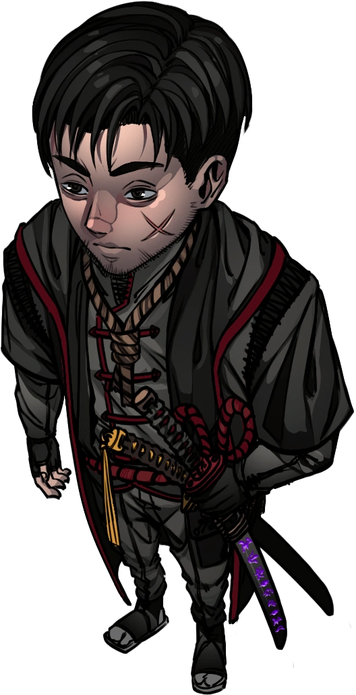

-
Arthur Cervero
- Agente
- Abutres
Arthur Cervero, após perder quase tudo que tinha, se juntou à Ordo Realitas para conseguir proteger o que restou.
"Eu sou um Gaudério... E a gente morre por quem a gente ama."
-
Joui Jouki
- Agente
- Mascarado
Joui Jouki é um agente da Ordo Realitas que decidiu adaptar seus métodos após uma primeira missão traumática.
"Vocês acham que eu sou um herói?! Eu sou um guerreiro!"
-
Cesar Cohen
- Agente
- Cinerária
Kaiser é um habilidoso hacker responsável por desenvolver a Central de Reconhecimento de Irregularidades Sobrenaturais, uma inteligência artificial que detecta atividades paranormais.
"Hoje... eu não sou Cesar, eu não sou Kaiser... eu sou o Angel of The Night."
-
Dante
- Agente
- Ocultista
Dante foi um ocultista preso por Tristan e Erin em janeiro, estando pessoalmente envolvido com Leonardo Gomes, o responsável pelo ritual que uniu Luciano e Fernando.
"É ironia do destino. É realmente uma Divina Comédia." -
Sr Verírssimo
- Líder da Ordo Realitas
Ele é o líder da Ordem e responsável por mandar os personagens em suas missões em todas as temporadas, além de ter treinado vários agentes da Ordem, incluindo sua filha.
"Se esses monstros são capazes de sentir algo, é melhor que também sintam medo. Porque nós estaremos em seu caminho." -
T-Bag
- Escripta
- Ocultista
Ele era um dos Marcados do lado de Kian, o auxiliando nos seus planos para destruir o paranormal com ajuda de outros Ocultistas, apesar de estar mais interessado na proteção dos Escriptas na ajuda de sua sobrevivência.
"Objetivo eu já perdi faz tempo, mas eu já tô aqui. Se for pra matar ou pra morrer... Eu quero é bater primeiro." -
Gal
- Escripta
- Ocultista
Gal foi apresentado primeiramente como um antagonista em Desconjuração, sendo o líder dos Escriptas, também conhecidos como Culto do Conhecimento.
"Injustiça, né? Muito prazer, eu sou a injustiça." -
Alef Freneza
- Escripta
- Ocultista
Alef Freneza foi um jovem que se juntou aos Escriptas após o final de Desconjuração.
"Quando é que eu vou ter que atirar?" -
Damir Lukic
- Escripta
- Ocultista
Damir é um estiloso ocultista que sempre se mantém próximo a seu irmão, Boris Lukic.
"Eu não quero que ninguém mais sofra... muito menos por consequência de coisas que eu fiz." -
Kian
- Líder dos Escriptas
O que tá na frente de vocês não é mais um ser humano, nunca foi. Vocês tão na frente de um monstro.
"Eu ainda sou imortal."